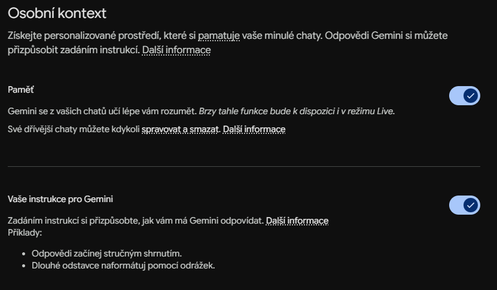
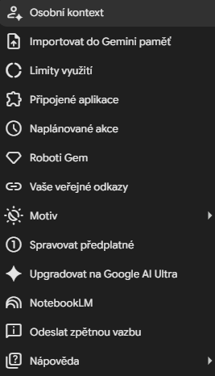

How to Easily Personalize Gemini?

When working with large language models daily, what tires me most is repeating the same instructions over and over: “write concisely, verify facts, do not use passive voice”. Most people use Google Gemini in its factory settings, which needlessly wastes time. Yet the key to efficiency lies in setting a permanent context so the assistant knows who you are, how you work, and what style of answers you require.
Whether you use the free version of Gemini or subscribe to advanced plans, Google offers multiple layers of customization. Let's look at how to make Gemini an effective digital assistant.
Memory and Preferences
The fastest path to making Gemini remember your preferences is through the Personal context tab. Here, you define permanent parameters for all future conversations.

Interestingly, automatic and manual settings differ. When you turn on Memory, Gemini learns continuously from your chats and stores facts about your projects or work style. But if you don't want to wait, you can write the preferred behavior manually into the instructions box. Personally, I have this stored: “I am a lawyer, I review business contracts, I prefer surgically precise answers without fluff, and I communicate in a business-like manner.” Anything the system remembers about you can be edited or deleted in this menu at any time.
⚠️ Important Notice for European Users: The automatic memory and chat import features from other AIs may be currently (as of May 2026) subject to regional restrictions. Google is currently rolling them out in the EEA.
Importing Memory and History from Other AIs
If you are switching to Gemini from ChatGPT or Claude and don't want to lose your conversation history, Google offers a direct data import, which you can find in the left sidebar menu under Import memory to Gemini.

The import works in two ways. You can either generate a specific prompt in Gemini to input into ChatGPT, and copy the resulting summary of your preferences back, or you can import your full chat history. Download your data export in a .zip file from your current provider's privacy settings and upload it to Gemini (supports archives up to 5 GB). Gemini then indexes your history, allowing you to seamlessly continue older projects.
Connecting to the Google Ecosystem (Extensions)
Gemini gets a much better overview of your tasks if you allow it to access data via Extensions. This connects the assistant to the Google Workspace applications you use daily.
In practice, this means you can ask directly in the chat: “Find the budget spreadsheet for 2026 on my Drive and summarize its main items” or “Search emails for communication with the client regarding the new website over the last week”. The assistant works with your real data in real-time. Similarly, you can connect Maps for route planning or YouTube for video research.
Setting Tone and Style Dynamically in Chats
Aside from global preferences, I recommend adjusting Gemini's behavior dynamically directly in the specific chat. Define the role (persona) you want the assistant to take in your very first prompt. For example, to simulate client negotiations, I use: “Act as an uncompromising corporate buyer who wants to slash our legal fee by 30%. Reply in a business-like, cold manner.” In the mobile app, you can choose from several realistic voices for Gemini Live to find the one that suits your spoken conversations best.
Gem Robots – The Ultimate Level of Personalization
For those who want to have specialized assistants for specific tasks constantly at hand, the best solution is creating Gems (for Advanced or Google Workspace subscribers).
You can create a custom Gem in less than a minute. In the menu, select New Gem, name it (e.g., “Contract Reviewer”), and write detailed system instructions. A key advantage is the ability to upload your own files as a knowledge base – such as a company style guide or template documents. Google also offers pre-made Gems, like the Copy creator for writing or Learning coach for explaining complex concepts.
Personalization is not just a tech toy. It is a way to turn an anonymous text generator into a tool that actually saves time in your daily agenda. Try writing at least three basic formatting rules into your preferences today and see how much more efficient every subsequent prompt becomes.